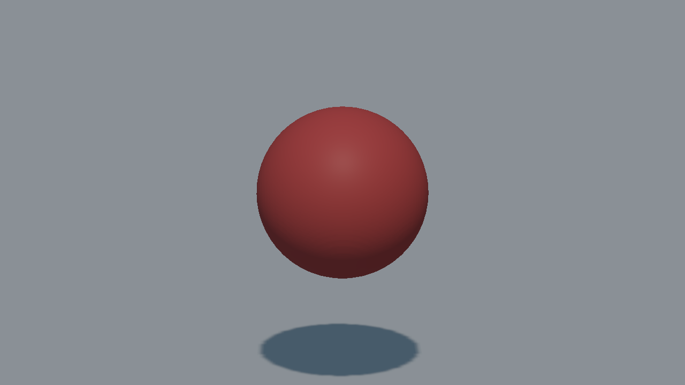
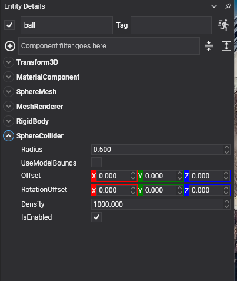

Sphere Collider

A sphere. The cheapest shape to test after a box, the only one with no orientation to get wrong, and the only primitive that rolls convincingly.
SphereCollider Component

Entity ball = new Entity("ball")
.AddComponent(new Transform3D() { Position = position })
.AddComponent(new MaterialComponent() { Material = material })
.AddComponent(new SphereMesh() { Diameter = 1f })
.AddComponent(new MeshRenderer())
.AddComponent(new RigidBody() { Restitution = 0.6f })
.AddComponent(new SphereCollider() { Radius = 0.5f });
this.Managers.EntityManager.Add(ball);
Properties
| Property | Default | Description |
|---|---|---|
| Radius | 0.5 | The radius of the sphere. A SphereMesh is measured by its diameter, so a mesh of diameter 1 matches a collider of radius 0.5. |
| UseModelBounds | false | Reads Radius as a factor of the largest axis of the model's bounds instead of in local units. See Local Units or Model Bounds. |
| Offset | 0,0,0 | Moves the shape relative to the entity. |
| RotationOffset | 0,0,0 | Rotates the shape relative to the entity. It has no visible effect on a sphere on its own, but it still applies inside a compound shape. |
| Density | 1000 | Density in kg/m³, used to compute the body's mass when its Mass is 0. |
Note
A sphere needs no convex radius: it is already round everywhere, which is also why it is the shape least likely to catch on the seam between two triangles of a mesh collider.
Tip
A sphere that will never stop rolling is usually asking for AngularDamping on its body rather than more friction.